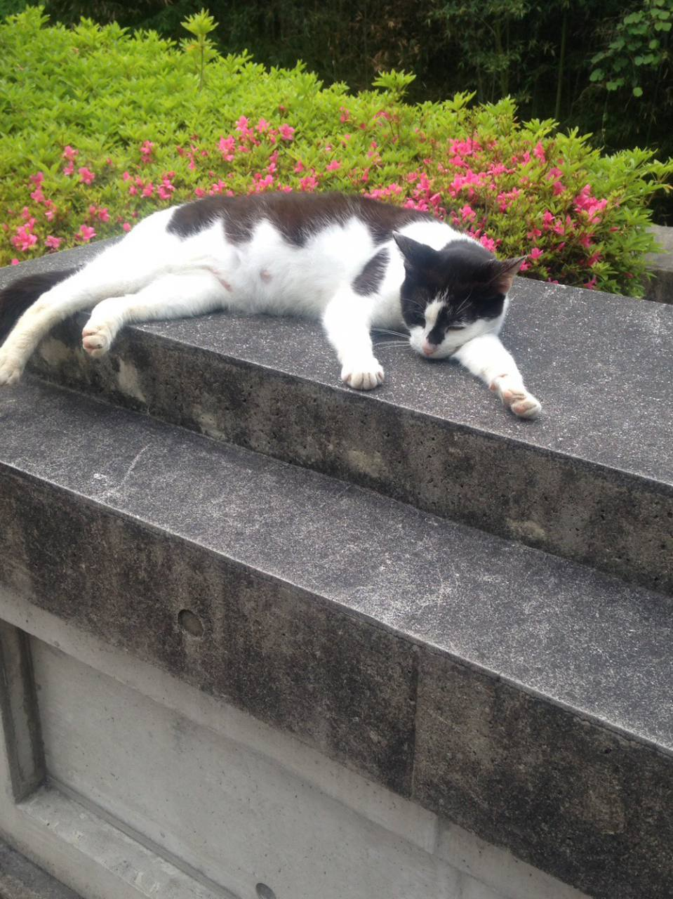
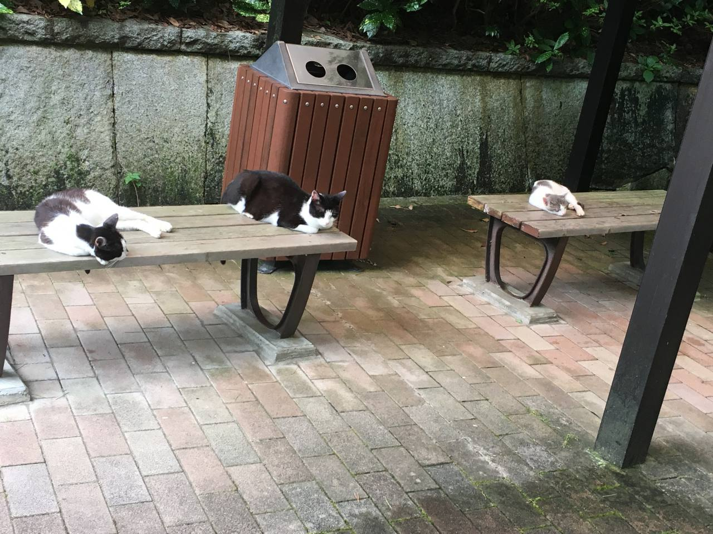
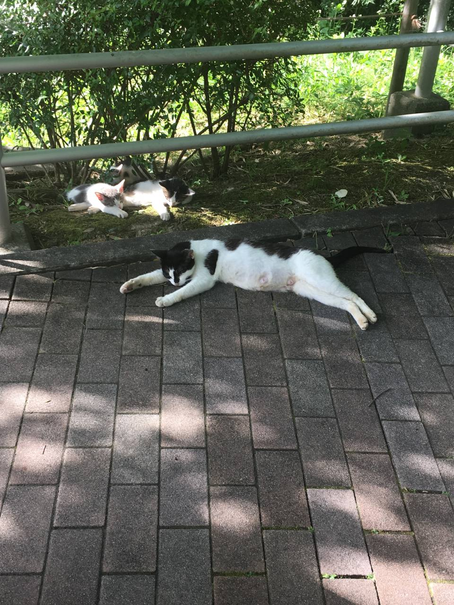
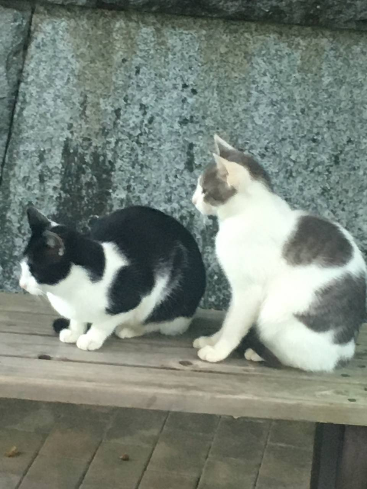
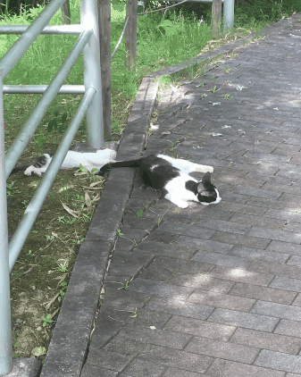

昨年(2017年)の昼下がりに無防備に昼寝をしている姿。
腕も脚をだらしなく伸ばして眠る姿はどこか人間みがあって可愛い(^o^)

今年の夏のある日。暑さのあまりに伸びるねこたち。
腕を体の下にしまっているところが可愛い！

春のある日。
手前の猫は1枚目と同じ猫だと気がついた。
脚を伸ばして寝るのが癖？？
3匹の母猫であることも発見！

最新の一枚。
右の猫が左の猫に頭をのせてくっついていたのがとても可愛かったです！

母猫のしっぽで遊んだり、兄弟で戯れる子猫の可愛い瞬間を激写！！
GIF画像にしてみました！
奇跡の瞬間！
同志社女子大学で猫と接するうえでのルール
・無責任に野良ネコに餌を与えないでください。
・撫でようとしたりすると噛まれたり引っかかれたりする可能性があります。外傷だけでなく感染症のリスクがあります。
大学内にも注意喚起の看板が設置されています。是非合わせてご覧ください。
あまり近づかずにこっそり猫を見守りましょう！